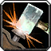
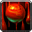

The Dungeons and Dragons party
Jellope | Level 8 cleric
Experience to level
Ability Scores
Strength
Dextarity
Constitution
Intellect
Wisdom
Charisma
Racial Abilities: Human
Ability Score Modifiers:
Human characters gain a +2 racial bonus to one ability score of their choice at creation to represent their varied nature.
Choose +2 to Dexarity
 Bonus Feat:
Bonus Feat:
Humans select one extra feat at 1st level.
Choose power attack.
Skilled:
Humans gain an additional skill rank at first level and one additional rank whenever they gain a level.
Table below
Class Abilities: Cleric
Aura:
A cleric of a chaotic, evil, good, or lawful deity has a particularly powerful aura corresponding to the deity’s alignment (see detect evil for details).
I choose to be evil.
Channel Energy (4d6):
Regardless of alignment, any cleric can release a wave of energy by channeling the power of her faith through her holy (or unholy) symbol. This energy can be used to cause or heal damage, depending on the type of energy channeled and the creatures targeted.
A good cleric (or a neutral cleric who worships a good deity) channels positive energy and can choose to deal damage to undead creatures or to heal living creatures. An evil cleric (or a neutral cleric who worships an evil deity) channels negative energy and can choose to deal damage to living creatures or to heal undead creatures. A neutral cleric of a neutral deity (or one who is not devoted to a particular deity) must choose whether she channels positive or negative energy. Once this choice is made, it cannot be reversed. This decision also determines whether the cleric can cast spontaneous cure or inflict spells (see spontaneous casting).
Channeling energy causes a burst that affects all creatures of one type (either undead or living) in a 30-foot radius centered on the cleric. The amount of damage dealt or healed is equal to 1d6 points of damage plus 1d6 points of damage for every two cleric levels beyond 1st (2d6 at 3rd, 3d6 at 5th, and so on). Creatures that take damage from channeled energy receive a Will save to halve the damage. The DC of this save is equal to 10 + 1/2 the cleric’s level + the cleric’s Charisma modifier. Creatures healed by channel energy cannot exceed their maximum hit point total—all excess healing is lost. A cleric may channel energy a number of times per day equal to 3 + her Charisma modifier. This is a standard action that does not provoke an attack of opportunity. A cleric can choose whether or not to include herself in this effect.
A cleric must be able to present her holy symbol to use this ability.
Because of my evil alignment, I weave negative energy.
Domain (Death):
You can cause the living to bleed at a touch, and find comfort in the presence of the dead.
Bleeding Touch (Sp):
As a melee touch attack, you can cause a living creature to take 1d6 points of damage per round. This effect persists for a number of rounds equal to 1/2 your cleric level (minimum 1) or until stopped with a DC 15 Heal check or any spell or effect that heals damage. You can use this ability a number of times per day equal to 3 + your Wisdom modifier.
Death’s Embrace (Ex):
At 8th level, you heal damage instead of taking damage from channeled negative energy. If the channeled negative energy targets undead, you heal hit points just like undead in the area.
Cause Fear (Ex):
As a 1st level spell, the affected creature becomes frightened. If the subject succeeds on a Will save, it is shaken for 1 round. Creatures with 6 or more HD are immune to this effect. Cause fear counters and dispels remove fear.
Death Knell (Ex):
As a 2nd level spell, you draw forth the ebbing life force of a creature and use it to fuel your own power. Upon casting this spell, you touch a living creature that has -1 or fewer hit points. If the subject fails its saving throw, it dies, and you gain 1d8 temporary hit points and a +2 enhancement bonus to Strength.
Additionally, your effective caster level goes up by +1, improving spell effects dependent on caster level. This increase in effective caster level does not grant you access to more spells. These effects last for 10 minutes per HD of the subject creature.
Animate Dead (Ex):
As a 3rd level spell, this spell turns corpses into undead skeletons or zombies that obey your spoken commands.
The undead can be made to follow you, or they can be made to remain in an area and attack any creature (or just a specific kind of creature) entering the place. They remain animated until they are destroyed. A destroyed skeleton or zombie can’t be animated again.
Regardless of the type of undead you create with this spell, you can’t create more HD of undead than twice your caster level with a single casting of animate dead. The desecrate spell doubles this limit.
The undead you create remain under your control indefinitely. No matter how many times you use this spell, however, you can control only 4 HD worth of undead creatures per caster level. If you exceed this number, all the newly created creatures fall under your control, and any excess undead from previous castings become uncontrolled. You choose which creatures are released. Undead you control through the Command Undead feat do not count toward this limit.
Skeletons: A skeleton can be created only from a mostly intact corpse or skeleton. The corpse must have bones. If a skeleton is made from a corpse, the flesh falls off the bones.
Zombies: A zombie can be created only from a mostly intact corpse. The corpse must be that of a creature with a physical anatomy. Editor’s Note: The rule regarding costing double HD for creating variant bloody skeleton and burning skeleton variants was not included in the fast zombie and plague zombie variant zombie template details. It is left to the GMs discretion if that rule would apply to creating variant zombies.
 Animate Dead (Ex):
Animate Dead (Ex):
As a 4th level spell, the subject gains a +4 morale bonus on saves against all death spells and magical death effects. The subject is granted a save to negate such effects even if one is not normally allowed. The subject is immune to energy drain and any negative energy effects, including channeled negative energy.
This spell does not remove negative levels that the subject has already gained, but it does remove the penalties from negative levels for the duration of its effect.
Death ward does not protect against other sorts of attacks, even if those attacks might be lethal.
 Orisons:
Orisons:
Clerics can prepare a number of orisons, or 0-level spells, each day, as noted on Table: Cleric under “Spells per day.” These spells are treated like any other spell, but they are not expended when cast and may be used again.
Table below
| Spells | ||||
| 0th | 1st | 2nd | 3rd | 4th |
|---|---|---|---|---|
| 4 | 5 | 4 | 4 | 3 |
Spontaneous casting:
A good cleric (or a neutral cleric of a good deity) can channel stored spell energy into healing spells that she did not prepare ahead of time. The cleric can “lose” any prepared spell that is not an orison or domain spell in order to cast any cure spell of the same spell level or lower (a cure spell is any spell with “cure” in its name).
An evil cleric (or a neutral cleric of an evil deity) can’t convert prepared spells to cure spells but can convert them to inflict spells (an inflict spell is one with “inflict” in its name).
A cleric who is neither good nor evil and whose deity is neither good nor evil can convert spells to either cure spells or inflict spells (player’s choice). Once the player makes this choice, it cannot be reversed. This choice also determines whether the cleric channels positive or negative energy (see channel energy).
Class Skills
Skill Ranks Per Level: 2 + Int modifier.
Appraise
Craft
Diplomacy
Heal
Knowledge (arcana)
Knowledge (history)
Knowledge (nobility)
Knowledge (planes)
Knowledge (religion)
Feats
 Power Attack:
Power Attack:
Prerequisites: Str 13, base attack bonus +1.
You can choose to take a –1 penalty on all melee attack rolls and combat maneuver checks to gain a +2 bonus on all melee damage rolls. This bonus to damage is increased by half (+50%) if you are making an attack with a two-handed weapon, a one handed weapon using two hands, or a primary natural weapon that adds 1-1/2 times your Strength modifier on damage rolls. This bonus to damage is halved (–50%) if you are making an attack with an off-hand weapon or secondary natural weapon.
When your base attack bonus reaches +4, and every 4 points thereafter, the penalty increases by –1 and the bonus to damage increases by +2.
You must choose to use this feat before making an attack roll, and its effects last until your next turn. The bonus damage does not apply to touch attacks or effects that do not deal hit point damage.
Defiant Luck:
Prerequisites: Human.
Once per day, after you roll a natural 1 on a saving throw or a critical hit is confirmed against you, you can either reroll that saving throw, or force the creature that confirmed the critical hit against you to reroll the critical confirmation roll. This does not stack with other effects that allow you to reroll a saving throw or an attack roll. You may only make one reroll.
Special: If you are using the optional hero point system, you can also spend 1 hero point when a critical hit is confirmed against you to have the opponent reroll the critical hit confirmation roll.
Equipment
Weapon and Armor Proficiency:
Clerics are proficient with all simple weapons, light armor, medium armor, and shields (except tower shields). Clerics are also proficient with the favored weapon of their deities.
Chain Coat
Medium Armor
Cost 75 gp; Weight 40 lbs.
Armor Bonus +4; Max Dex Bonus +5; Armor Check Penalty -2
Arcane Spell Failure Chance 30%; Speed 20 ft./15 ft.
This relatively simple armor consists of heavy chains that wrap around your body and limbs. While it weighs more and provides less protection than other medium armors, it is also less of a hindrance. In addition, if you are wielding a spiked chain, you can affix it to one hand. This functions as a locked gauntlet, and if you are proficient with spiked chains, you can treat the spiked chain as a one-handed weapon while it is attached. You can affix a spiked chain to each hand this way, but you can’t wear locked gauntlets while wearing a chain coat, and you can’t attach any weapon to a chain coat except spiked chains.
 Lucerne Hammer
Lucerne Hammer
Cost 15 gp Weight 12 lbs.
Damage 1d10 (small), 1d12 (medium) Critical x2 Type bludgeoning or piercing
Category two-handed Proficiency martial
Weapon Group polearms
Special brace, reach
This polearm has both a pronged hammer head for crushing blows and a spiked head for piercing and peeling armor. The long haft allows the wielder to put amazing force behind the head of this weapon.
You gain a +2 bonus on combat maneuver checks to sunder medium or heavy armor with a lucerne hammer.